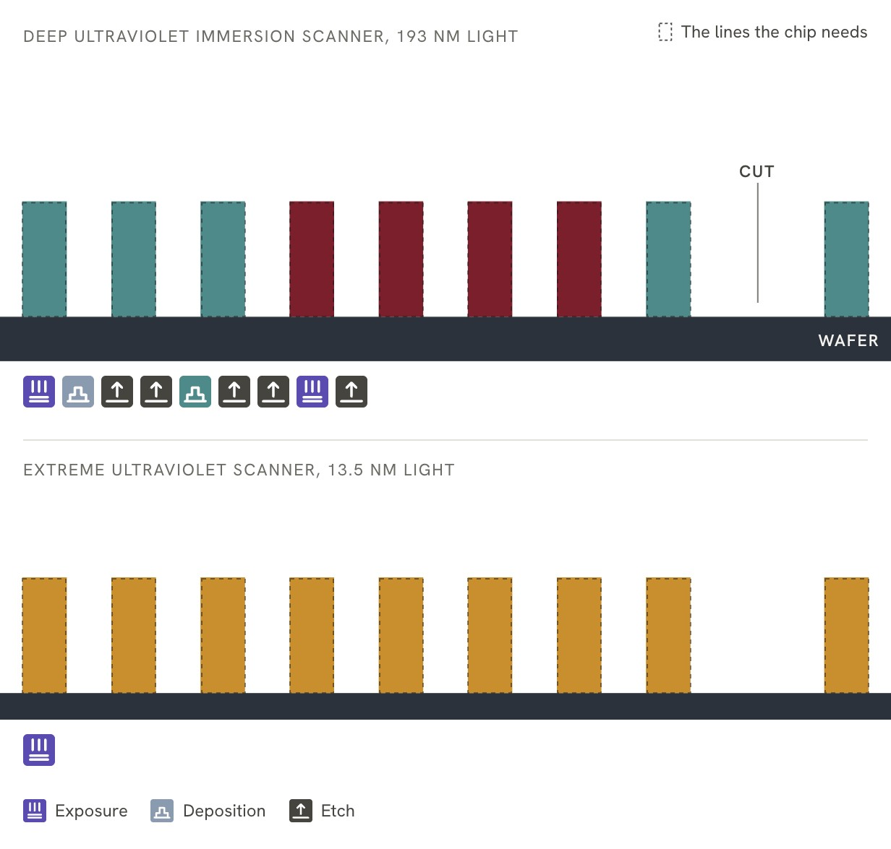

Stage 4 of 14Extreme concentrationVery hard to substitute
Chapter 4: Lithography
ASML, a Dutch firm, is the only maker of extreme ultraviolet scanners, the machines that print the finest layers of a chip. It sold 48 of them in 2025.
Sharma, Yashvardhan. “Lithography.” Chip Supply Chain: How AI Chips Are Made. Updated 29 October 2026. https://chipsupplychain.org/lithography/
An extreme ultraviolet scanner cut open along its light path. The machine is the size of a bus and weighs about 180 metric tons. The blue-violet thread is the 13.5 nm light. The mask and the wafer are drawn about twice their true size.
Parts, as numbered on the drawing
- 1Light source: ASML San Diego (US), laser by Trumpf (DE)
- 2Mirrors: Zeiss SMT (DE)
- 3Mask: see stage 05, Photomasks and Pellicles
- 4Wafer: see stage 02, Silicon and Wafers
In plain terms
prints the pattern of a circuit onto the . A machine holds a stencil of one layer of the circuit up to a light source and projects the image, four times smaller, onto the silicon. The shorter the wavelength of the light, the finer the lines a machine can print. Even so, a machine can print lines narrower than its light’s wavelength. , for example, shine the light through a layer of water between lens and wafer, which lets them print smaller features with the same light1. ASML rates one of its immersion scanners, the NXT:2150i, at features of 38 or less, printed with light at 193 nanometers2. Air soaks up light, the shortest in use, so machines that print with it work in a vacuum. Only ASML, a Dutch company, makes them. are government rules on who a company may sell to. Every advanced passes through ASML’s machines, so export controls on ASML affect all advanced chipmaking.
In short
Beyond (EUV), ASML holds above 80 percent of the market for (DUV) , which uses light of longer wavelength3. In July 2026 ASML put its capacity for 2026 at around 65 standard EUV scanners, which caps how many anywhere can add that year4. ASML says the production capacity of Zeiss, its sole supplier of optics, limits how many it can build5.
set up by the United States with allies including the Netherlands block EUV scanners from Chinese 6. In December 2025 Reuters reported a Chinese prototype that had made EUV light but had printed no chip7. In July 2026 Reuters reported, citing one unnamed source, that a Shanghai firm with two state shareholders has started producing tools, which shine their light through water8.
ASML sold 327 in 20259. Tools shipped to China made up 33 percent of its net system sales that year, more than any other region10.
- Who leads
- Where it is made
- NLNetherlands ASML, the Dutch maker of every EUV scanner
- DEGermany Zeiss SMT optics, Oberkochen, and Trumpf carbon dioxide drive lasers, Ditzingen
- USUnited States ASML light-source research and manufacturing, San Diego
- JPJapan Nikon and Canon lithography scanners and steppers
In July 2026 Reuters reported, citing one unnamed source, that a Shanghai firm with two state shareholders had started producing tools8. The Center for Technology & Statecraft found in September 2026 that Chinese firms had begun small-batch production of such , but none had yet been shown fit for producing advanced 14. Its central estimate in 2026 was that China would have a commercially viable immersion scanner for 7 nm chips in the mid-2030s, with the early 2030s plausible, and EUV not before the second half of the 2030s14. Meanwhile Chinese had built a stockpile of more than 330 immersion DUV systems by the first quarter of 2026, most of them ASML’s NXT:1980i14.
CSET found in 2021 that no American firm made lithography scanners15. In September 2026 the Center for Technology & Statecraft found that ASML held about 99 percent of the market for immersion DUV scanners and Japan’s Nikon the rest14. But every immersion DUV scanner holds a light source from Cymer, a US company now part of ASML, or from Japan’s Gigaphoton, so the two governments could stop sales by controlling those parts, the Center for Technology & Statecraft found in September 202614. A US rule published in October 2023 already covers immersion scanners with an error between 1.5 nm and 2.4 nm bound for advanced chipmaking if they hold any American-made parts16. The US also requires a license to supply the firms it names17.
How lithography prints a chip’s pattern
The stencil is called a , and the machine a scanner (see Photomasks and pellicles).
The is coated with , a film that changes wherever light touches it. The mask holds one layer of the circuit as a pattern of clear and dark areas, drawn at four times its size on the . The machine shines light through the mask, shrinks the image four times with a lens, and lands it on the film.
A wash then removes the film where the light hit, or, with some films, where it did not, leaving the pattern standing on the wafer18. The film then serves as a stencil for the next step, which either the pattern into the layer beneath or fires ions into the open areas to change how the silicon conducts18. Then the film is stripped and the next mask goes in. Chips are made up of dozens of layers, ASML says18. Photronics, a US , says masks are typically sold in sets, with each layer’s pattern on a different mask19.
How lithography prints a chip

- Coat. The wafer is coated with a thin film that changes wherever light touches it.
- Stencil. A stencil, called a mask, holds the pattern for one layer of the chip, drawn four times larger than life.
- Shrink. Light shines through the stencil, and a lens shrinks the image four times and lands it on the film.
- Wash. A wash removes the film wherever the light landed, and the pattern is left on the wafer.
- Repeat. The machine steps across the wafer, printing one patch at a time, each about the size of a postage stamp.
The image from one mask covers a patch of up to 26 by 33 mm20. The wafer moves under the optics one patch at a time, close to a hundred patches per wafer. ASML’s own rating for an assumes 96 of them20. Before the wafer is exposed, the machine measures marks printed in earlier layers so the new layer lines up with them20. For its NXE:3400B EUV scanner, ASML rates the matched-machine overlay, a measure of that alignment, at 2 20. That model first shipped in 201721.
Finer lines need shorter light. Glass and air both absorb the shortest light in use, at 13.5 nm22. So an EUV scanner works in a vacuum and uses mirrors instead of lenses, and its masks are mirrors too22. (DUV) machines use light with a wavelength more than fourteen times longer13. ASML calls its the workhorses of the industry, used in of the most advanced logic and memory chips23.
When one exposure cannot draw a pattern finely enough, chipmakers use . In the litho-etch kind, the pattern is split between two or more masks printed in turn24. Each added mask brings more process steps, more cost and a risk that the parts of the pattern misalign25. Self-aligned double and quadruple patterning (SADP and SAQP) print the lines with one exposure and then multiply them with and etch steps24. In SAQP each printed line ends up as four24. Because one exposure places all those lines, they cannot misalign with each other24. A later exposure still prints blocks that break them where the circuit needs gaps24. ASML says one EUV exposure per layer cuts masks and process steps and lowers cost26.
How several passes turn one line into four

- Print. A deep ultraviolet scanner shines light through a mask and prints a row of lines, called cores, in one exposure. The chip needs lines four times as dense, closer than one exposure can draw.
- Coat. A thin film is deposited over everything, covering the top and both sides of every core.
- Etch back. An etch straight down clears the film from the tops and the floor and leaves it on the sides of each core. These strips are the spacers, and the edges of the cores set where they stand.
- Two lines. An etch removes the cores and leaves the spacers standing, two for each printed line. All of them trace back to one exposure, so they cannot misalign with each other.
- Four lines. The spacers now serve as cores. The same deposition and etch steps give each of them spacers of its own, so every printed line ends up as four, at a quarter of the spacing.
- Cut. A later exposure prints blocks that break the lines where the circuit needs gaps. ASML says one EUV exposure per layer cuts masks and process steps and lowers cost.
DUV and EUV scanners compared
Deep ultraviolet
Deep ultraviolet (DUV) light comes from gas lasers called excimer lasers: 248 nanometers from (KrF), 193 from (ArF), shone through air or water13. Cymer, an independently run ASML business in San Diego, makes these excimer lasers, which generate the light that scanners use to print patterns on wafers27. Gigaphoton, a Komatsu company in Japan, also makes excimer lasers for tools28.
Of the systems ASML sold in 2025, 131 were ArF immersion, 78 KrF and 16 ArF dry, all deep ultraviolet, and another 54 were older tools10. The i-line tools use 365 nm light from a mercury lamp, and ASML says they print features as small as 220 nm13.
Reuters gives one price for the whole DUV segment, with tools costing roughly $60 million each3. ASML’s own figures split its DUV sales by tool type. In 2025 the 131 ArF immersion tools it sold made up 42 percent of its system sales, and the 78 KrF tools only 4 percent10. In DUV, ASML competes with Nikon and Canon, and it still holds above 80 percent of that market3.
Chipmakers without EUV build their finest layers on immersion DUV scanners, in several passes per layer (figure 04.2)26. From 1 September 2023, Dutch covered the most advanced of these scanners, ASML’s NXT:2000i and later models29.
Extreme ultraviolet
The 13.5 nm light comes from molten tin droplets shot from a generator13. A laser hits each droplet twice, first with a low-intensity pulse that flattens it and then with a more powerful one that vaporizes it into 13. The process repeats 50,000 times a second13. Mirrors made by Zeiss, a German optics company, carry the light to the wafer1. The largest are a meter across and smooth to within tens of picometers, a picometer being a thousandth of a nanometer1.
Brighter light means more wafers an hour, and ASML demonstrated the first 1,000-watt EUV source in April 202530. Its TWINSCAN NXE:3800E ships at its full 220 wafers an hour, 37 percent more than the NXE:3600D31.
High-NA EUV
raise the numerical aperture (NA), a measure of how well the optics collect and focus light, from 0.33 to 0.5532. That cuts the smallest printable feature from 13 nm to 8 nm32. Their optics shrink the mask image four times in one direction and eight in the other, halving the patch of wafer one exposure covers and doubling the exposures per wafer32. The second-generation TWINSCAN EXE:5200B runs at 175 wafers an hour, 60 percent above the EXE:500026.
Reuters puts a standard EUV tool at around $200 million and a High-NA machine at an estimated $350 to $400 million3.
High-NA EUV scanners cost an estimated $350 million to $400 million in 2026
What one lithography system costs. The DUV bar is one figure for the whole segment
| DUV tool | $60M |
|---|---|
| EUV, 0.33 NA | $200M |
| High-NA EUV | $350–400M |
Sharma, Yashvardhan. “Figure 04.3: What one lithography system costs.” Chip Supply Chain: How AI Chips Are Made. Updated 29 October 2026. https://chipsupplychain.org/lithography/#fig-lithography-tool-price. Data: Reuters explainer on ASML’s lithography machines, first published 28 January 2026 and updated 28 July 2026.
ASML sold four High-NA (EXE) systems in 2025, against two in 202433. In its 2025 annual report, filed in February 2026, ASML said it expected High-NA to start supporting high-volume manufacturing in 20275.
Intel and TSMC have chosen differently on High-NA:
- Intel says it uses High-NA in volume production for select layers of some Intel 18A products34. It installed the first EXE:5200B35. By September 2026 it had run more than one million wafers on High-NA tools, a count that includes tool testing and research as well as volume production34.
- TSMC waited, and in September 2026 said it will use High-NA in high-volume manufacturing from 203036.
On 8 September 2026 ASML and TSMC announced a move from 6-inch photomasks to 12-inch ones, to remove stitching constraints36. Stitching constraints are the design limits that come from printing a large chip in two halves. ASML and TSMC aim for a pilot line for the new masks by 2031 and for High-NA systems that use them to enter production by 203336.
| 2023 | 53 tools |
|---|---|
| 2024 | 44 tools |
| 2025 | 48 tools |
Sharma, Yashvardhan. “Figure 04.4: EUV systems ASML sold each year.” Chip Supply Chain: How AI Chips Are Made. Updated 29 October 2026. https://chipsupplychain.org/lithography/#fig-lithography-euv-shipments. Data: ASML 2025 annual report for 2024 and 2025, and ASML’s Q4 2023 investor presentation for 2023, 24 February 2026.
Who makes lithography machines
ASML’s net sales were EUR 32.7 billion in 2025, at a 52.8 percent 9. In October 2026 it expected 2026 net sales of EUR 44 to 45 billion, at a gross margin of around 56 percent37. Its 2025 annual report lists 5,100 suppliers5. Three of them and ASML’s own San Diego site make the main parts of the EUV machine:
- Zeiss SMT, Oberkochen, Germany, makes the illumination system and the six-mirror projection optics38.
- Trumpf, Ditzingen, Germany, makes the carbon dioxide drive laser that hits the tin droplets39. It amplifies a few watts to 40 39.
- ASML San Diego, which includes the light-source maker Cymer that ASML bought in 2013, designs the source where the laser turns tin into plasma, and builds the droplet generator27.
- VDL ETG builds the frames that suspend and position the mirrors40.
ASML says the production capacity of Zeiss, its sole supplier of optics, limits how many lithography systems it can build5.
Lithography is the stage of the chain that European firms lead, with ASML the only maker of EUV scanners26. The bulk of ASML’s suppliers are in the Netherlands and the rest of Europe, the Middle East and Africa, the company says41.
In Japan, Nikon and Canon also make lithography tools. Nikon sold 22 new chip lithography systems in the year to March 2026, in a market it sizes at 570 units for 202512. Its Precision Equipment business made an in the year to March 202642. Canon sold 234 chip lithography systems in 2025, 188 of them i-line and 46 KrF11. Its range runs from KrF scanners to i-line steppers, including some built for 43. Canon also makes a nanoimprint system, the FPA-1200NZ2C, which stamps the pattern instead of projecting it and can print lines down to 14 nm wide44. Canon delivered one in 2024 to the Texas Institute for Electronics, to be used for research and prototypes44.
In January 2021 CSET, a research center at Georgetown University, found that the United States lacked firms in a few key parts of the chip supply chain, above all lithography tools15.
EUV made up 48 percent of ASML’s 2025 system sales
ASML net system sales by technology, 2025
| EUV | 48% |
|---|---|
| ArF immersion | 42% |
| KrF | 4% |
| Metrology and inspection | 3% |
| ArF dry | 2% |
| i-line | 1% |
Sharma, Yashvardhan. “Figure 04.5: ASML net system sales by technology, 2025.” Chip Supply Chain: How AI Chips Are Made. Updated 29 October 2026. https://chipsupplychain.org/lithography/#fig-lithography-litho-mix. Data: ASML Q4 2025 investor presentation, 28 January 2026.
Lithography export controls and China’s own scanners
Export controls set up by the United States with allies including the Netherlands block ASML from shipping EUV scanners to Chinese foundries6. In September 2025 judged that EUV remained “firmly out of reach” for China despite massive state investment6. For DUV scanners and other tools, the restrictions came in this order:
- Dutch national licensing of advanced DUV took effect on 1 September 202345.
- A US rule published on 25 October 2023 covered immersion scanners that print features of 45 nm or smaller with an alignment error between 1.5 nm and 2.4 nm16. If such a scanner was bound for advanced chipmaking, the rule put it under US export rules when it held any American content at all16. The rule did not apply to scanners first exported from a country that lists them on its own export control list16.
- A partial license revocation by the Dutch government, disclosed by ASML on 1 January 2024, stopped shipments of NXT:2050i and NXT:2100i immersion scanners to a few Chinese customers46.
- The Netherlands widened its licensing to more types of deep ultraviolet lithography equipment from 7 September 202445. On 15 January 2025 it announced that from 1 April 2025 the license requirement would also cover a very limited number of further goods, among them specific measuring and inspection equipment47.
- The , issued by the US Bureau of Industry and Security, extended controls to affiliates owned 50 percent or more by listed entities from 29 September 202517. BIS then suspended it until 9 November 202648. Exporting goods covered by US export rules to a firm on the entity list needs a US license17.
- The EU added certain Dutch controls to the EU Control List in November 20255. ASML says this changed nothing for its immersion tools, because they already needed a Dutch license5.
China’s share of ASML’s net system sales fell from 41 percent in 2024 to 33 percent in 202510.
On DUV, Reuters reported in July 2026, citing one unnamed source, that Shanghai Aishengna Electronic Technology Group has started producing home-grown immersion DUV tools8. The firm was registered in August 2023 with 7 billion yuan of capital and two state shareholders, Shanghai Electric Holding and a Shanghai International Trust subsidiary8. It has no website and has taken in teams from SMEE, China’s older scanner maker, and the startup Yuliangsheng8. SMEE is strongest in i-line, the coarsest kind of lithography tool, and even there holds only four percent of the world market6.
The Center for Technology & Statecraft, a research group, found in September 2026 that none of China’s home-grown immersion scanners had yet been shown fit for producing advanced chips14. Its central estimate was a commercially viable Chinese immersion scanner for 7 nm chips in the mid-2030s, and EUV not before the second half of the 2030s14. Until then Chinese rely on imported tools, and by the first quarter of 2026 they had built a stockpile of more than 330 immersion DUV systems, most of them ASML’s NXT:1980i14.
There is less evidence of Chinese progress on EUV. Reuters reported in December 2025 that a Shenzhen team of former ASML engineers had built a prototype that made extreme ultraviolet light but had printed no chip7. To print a chip, a machine also needs mirrors that carry that light to the wafer, and ASML’s sole supplier of those mirrors is Zeiss5.
China took 33 percent of ASML’s 2025 system sales, the largest share
ASML net system sales by the region tools shipped to, 2025
| China | 33% |
|---|---|
| South Korea | 25% |
| Taiwan | 22% |
| United States | 12% |
| Japan | 5% |
| Rest of Asia | 2% |
| EMEA | 1% |
Sharma, Yashvardhan. “Figure 04.6: ASML net system sales by the region tools shipped to, 2025.” Chip Supply Chain: How AI Chips Are Made. Updated 29 October 2026. https://chipsupplychain.org/lithography/#fig-lithography-asml-region. Data: ASML Q4 2025 investor presentation, 28 January 2026.
Why ASML’s EUV scanners are a chokepoint
No other company makes EUV scanners, so every fab that adds EUV capacity buys it from ASML26. The scanners already in fabs keep printing only as long as they are serviced. ASML has around 10,000 customer support employees who maintain and upgrade those machines around the clock49. Serviced this way, ASML’s machines stay in use for a long time. In its 2025 annual report ASML said about 95 percent of the systems it had sold in the previous 30 years were still in use5. The same report warned that export controls may limit the service ASML can provide for machines already installed50.
ASML has a of its own. Zeiss SMT is its only supplier of lenses, mirrors and other critical optics51. ASML says that if Zeiss could not supply them for a long period, ASML would effectively be unable to run its business51.
ASML’s capacity caps how many EUV scanners fabs anywhere can add each year. In July 2026 ASML put its 2026 capacity at around 65 standard (low-NA) EUV scanners and said it plans to add 30 percent for 20274.
AI are made with EUV, which prints their finest layers, the ones that set how densely and wires pack22. TSMC expects the number of layers needing High-NA to rise, driven mainly by the more complex transistors that AI chips need36.
Flashcards
Recall each answer, then turn the card.
What does lithography do?
It prints each layer of a chip’s circuit onto the wafer, by projecting the image of a stencil, four times smaller, onto the silicon.
Why do chipmakers print the finest layers with extreme ultraviolet (EUV) light?
Its shorter wavelength lets one exposure print what deep ultraviolet (DUV) machines need several passes to build.
Who makes EUV machines?
Only ASML, a Dutch company. Export controls stop it from selling them to Chinese chipmakers.
Reread: Controls and China’s answer
What limits how many EUV machines chip factories can add each year?
How many ASML can build, because no other company makes them.
Four things to remember
- Lithography prints each layer of a chip’s circuit onto the wafer.
- Extreme-ultraviolet (EUV) light prints the finest layers in fewer steps than deep ultraviolet, but air and glass absorb it, so EUV machines work in a vacuum and use mirrors.
- ASML of the Netherlands is the only maker of EUV machines, and Zeiss alone supplies their mirrors.
- Export controls block EUV sales to Chinese chipmakers, and a Chinese prototype reported in December 2025 had printed no chip.
Sources (51)
Source tiers A company filings, governments, standards bodies, universities and research institutions. B SemiAnalysis, Reuters, the Financial Times and Nikkei Asia.
- ALenses & mirrors - Lithography principles
- ATWINSCAN NXT:2150i
- BExplainer: The $400 million ASML ‘printers’ key for the AI chip boom
- APress Release Financial Results Q2 2026
- AASML Holding, 2025 annual report, filed on Form 6-K
- ABreakthroughs or Boasts? Assessing Recent Chinese Lithography Advancements
- BHow China built its ‘Manhattan Project’ to rival the West in AI chips
- BChina starts production of home-grown immersion DUV chipmaking tools, source says
- AFinancial performance: From ASML’s Annual Report 2025
- AASML 2025 fourth-quarter and full-year results (investor presentation)
- ACanon Inc. FY 2025 Results
- AFinancial Results: The Year Ended March 31, 2026
- AAll about light and lasers in lithography
- ADUV Immersion Lithography: The Foundation of the US AI Advantage
- AThe Semiconductor Supply Chain - Issue Brief
- AExport Controls on Semiconductor Manufacturing Items
- AExpansion of End-User Controls To Cover Affiliates of Certain Listed Entities
- A6 crucial steps in semiconductor manufacturing
- APhotronics, annual report on Form 10-K for the fiscal year ended 31 October 2025
- ATWINSCAN NXE:3400B: EUV lithography systems
- AStronger than expected demand drives ASML Q1 sales
- AASML EUV lithography systems
- ASee ASML’s DUV lithography systems
- AEUV lithography: weighing the options
- AApplied Materials’ Innovative Pattern-Shaping Technology Reduces the Cost, Complexity and Environmental Impact of Advanced Chip Manufacturing
- AStrategic report: From ASML’s Annual Report 2025
- AExplore ASML San Diego
- AGigaphoton, company profile
- AStatement regarding export control regulations Dutch government
- AStrategic report: From ASML’s Annual Report 2025
- AStrategic report: From ASML’s Annual Report 2025
- A5 things you should know about High NA in EUV
- AFinancial performance: From ASML’s Annual Report 2025
- AIntel Foundry and ASML Accelerate Industry Readiness for High-NA EUV
- AHigh NA EUV reaches new readiness milestone with first high-volume Logic product
- AASML and TSMC Announce Initiative to Pioneer Industry Transition to Large-Format Photomasks for High NA EUV
- AASML reports €11.7 billion total net sales and €5.0 billion net income in Q3 2026
- AEUV lithography and technology
- AGood things come in ever-smaller packages
- AVDL ETG builds complex frames for Zeiss
- ASourcing & Supply Chain
- AFinancial Results: The Year Ended March 31, 2026
- ASemiconductor Lithography Equipment
- ACanon delivers FPA -1200NZ2C nanoimprint lithography system for semiconductor manufacturing to the Texas Institute for Electronics
- AThe Netherlands expands export control measure for advanced semiconductor manufacturing equipment
- AStatement regarding partial revocation export license
- AKlever: export controls on advanced semiconductor manufacturing equipment to be tightened
- AOne Year Suspension of Expansion of End-User Controls for Affiliates of Certain Listed Entities
- AStrategic report: From ASML’s Annual Report 2025
- AStrategic report: From ASML’s Annual Report 2025
- AStrategic report: From ASML’s Annual Report 2025